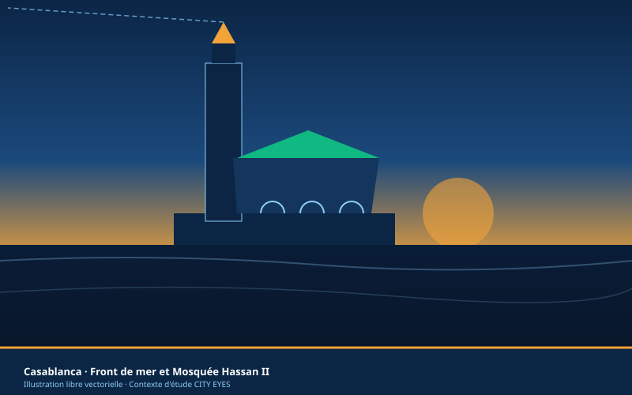
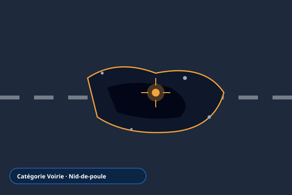
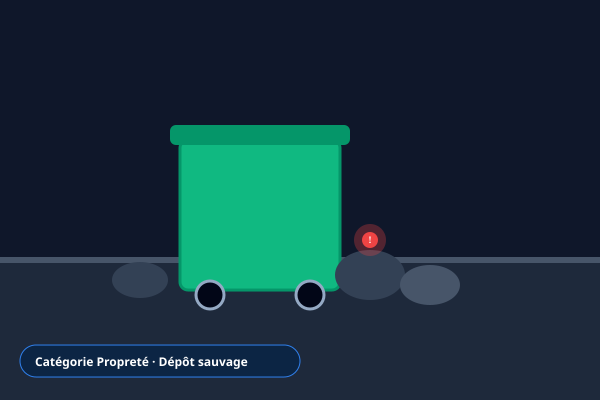
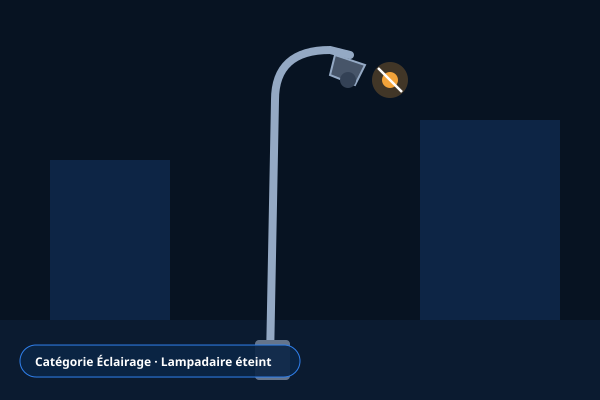
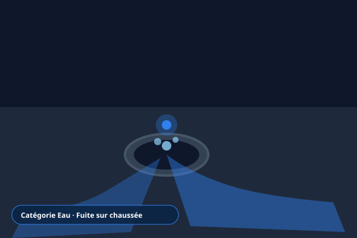
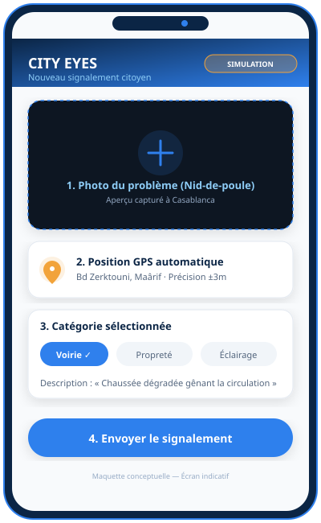
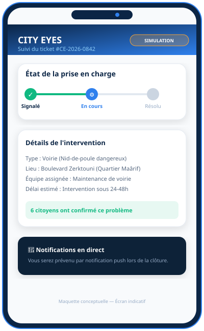
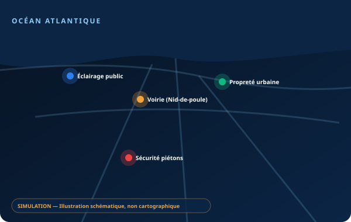
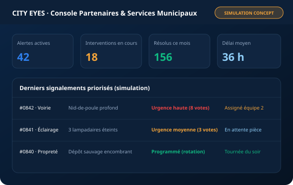

CITY EYES
Réseau citoyen de détection des problèmes urbains
« Vos yeux pour une ville meilleure. »
Une métropole en pleine mutation
Le développement rapide des villes comme Casablanca entraîne une hausse constante des besoins en propreté, sécurité, entretien des infrastructures et réactivité des services publics.
Le défi urbain au quotidien
Nids-de-poule, déchets abandonnés, éclairage public défaillant, fuites d'eau ou trottoirs dégradés : le signalement de ces problèmes et leur transmission rapide aux services concernés ne sont pas toujours simples. Les citoyens manquent souvent d'un canal rapide, et les services techniques d'une vision centralisée.
CITY EYES propose une plateforme participative : chaque citoyen peut signaler une anomalie avec une photo, sa localisation GPS et un système de suivi transparent.

Le fonctionnement en 4 gestes
Une application mobile simple pour signaler, localiser et suivre les problèmes urbains.
1. Photographier
Capturer le problème en quelques secondes avec l'appareil photo du smartphone.
2. Localiser
Position GPS précise, automatique et sans saisie manuelle de texte.
3. Catégoriser
Choisir simplement parmi les 7 catégories de voirie prédéfinies.
4. Suivre
Voir l'évolution du signalement en temps réel jusqu'à sa résolution.
7 catégories de problèmes détectés
Les typologies de signalements urbains identifiées dans l'étude :

VoirieNids-de-poule, routes dégradées

PropretéDéchets abandonnés, dépôts sauvages

ÉclairageLampadaires défectueux

EauFuites d'eau sur le réseau
Canalisations bouchées, inondations de chaussée
Bancs cassés, panneaux endommagés
Arbres dangereux, espaces dégradés, trottoirs impraticables
Proposition de valeur :
Simplicité du signalement · Précision de la géolocalisation · Transparence du suivi · Participation citoyenne.
« Transformer chaque citoyen en observateur actif pour construire une ville plus propre, plus sûre et mieux entretenue. »
Qui utilise, qui paie
Les citoyens sont les utilisateurs principaux. Les collectivités et entreprises pourraient être les clients payeurs, sous réserve de validation commerciale.
Segments Utilisateurs
Gratuit-
Citoyens : habitants, étudiants, visiteurs soucieux de leur cadre de vie.
-
Commerçants et automobilistes : usagers subissant les problèmes affectant l'activité ou les déplacements quotidiens.
-
Associations de quartier : collectifs locaux engagés dans l'amélioration du cadre urbain.
Segments Payeurs Potentiels
Sous réserve de validation-
Communes et arrondissements : identifier, centraliser et prioriser les interventions municipales.
-
Entreprises de maintenance et de propreté : organiser et optimiser le suivi technique des équipes sur le terrain.
-
Gestionnaires immobiliers et promoteurs : superviser et préserver leurs espaces et abords.
Besoins identifiés et réponses CITY EYES
| Besoin potentiel | Réponse CITY EYES |
|---|---|
| Difficulté à signaler | Application mobile simple avec prise de photo |
| Localisation imprécise | Géolocalisation GPS automatique sans saisie textuelle |
| Absence de suivi visible | Tableau de suivi des signalements en direct |
| Problèmes dispersés | Centralisation et cartographie |
| Priorisation difficile | Classement par catégorie et niveau de priorité |
| Participation limitée | Réseau collaboratif citoyen |
Contexte numérique (source DataReportal, Digital 2026 Morocco) : Environ 35,5 millions d'internautes au Maroc fin 2025 (taux de pénétration de 92,2 %). Ce chiffre décrit l'environnement numérique porteur, mais ne prouve pas à lui seul une demande spontanée pour CITY EYES.
Des dispositifs existent déjà
Chikaya (portail national) et CiRM Casablanca (dispositif local) sont les références institutionnelles. Les réseaux sociaux servent à publier, mais pas à gérer structurellement les interventions.
| Critère | Chikaya | CiRM Casablanca | Réseaux sociaux | CITY EYES (prévu) |
|---|---|---|---|---|
| Signalement citoyen | Oui | Oui | Oui | Oui |
| Photo | À vérifier | À vérifier | Oui | Oui |
| Géolocalisation | À vérifier | À vérifier | Variable | Oui |
| Suivi | Oui | Oui | Non structuré | Oui |
| Cartographie | À vérifier | À vérifier | Non structurée | Oui |
| Classement par catégorie | Selon dispositif | Selon dispositif | Non | Oui |
Différenciation envisagée
CITY EYES ne doit pas être « une application de plus ». Son positionnement : contribuer à organiser et prioriser la résolution des problèmes, pas seulement à les signaler.
Cartographie interactive
Vue d'ensemble géolocalisée pour situer les incidents en temps réel.
Concept envisagé, à validerDétection collaborative
Possibilité pour plusieurs citoyens de confirmer un problème signalé.
Concept envisagé, à validerRegroupement des doublons
Fusion automatique des alertes multiples pour éviter l'encombrement des services.
Concept envisagé, à validerPriorisation des interventions
Orientation des équipes d'intervention selon le niveau d'urgence constaté.
Concept envisagé, à validerStatistiques récurrentes
Analyse des zones récurrentes pour des rénovations structurelles.
Concept envisagé, à validerTableau de bord partenaires
Outil de gestion dédié pour les collectivités et entreprises de maintenance.
Concept envisagé, à validerDémonstration cartographique schématique — Casablanca
Aperçu conceptuel de répartition des anomalies urbaines.
Simulations des interfaces CITY EYES
Maquettes de simulation conceptuelle illustrant le parcours utilisateur :

Écran de signalement
Simulation conceptuelle
Écran de suivi
Simulation conceptuelle
Carte des signalements
Simulation conceptuelle
Console de supervision
Simulation conceptuellePESTEL et Matrice SWOT
Analyse de l'environnement macroéconomique et matrice diagnostique interne / externe.
PESTEL (6 dimensions)
Politique
Modernisation urbaine et digitalisation des services publics peuvent favoriser le projet.
Économique
Collectivités et prestataires cherchent à optimiser leurs budgets d'entretien.
Socioculturel
Envie des citoyens de participer davantage à l'amélioration de leur quartier.
Technologique
GPS, smartphones, cartes interactives et services cloud facilitent le développement.
Environnemental
Gestion des déchets, propreté et préservation des espaces publics.
Légal
Données personnelles et géolocalisation : conformité à la loi 09-08 et à la CNDP à étudier.
Matrice SWOT (Synthèse)
Forces 💪
Concept participatif, simplicité, géolocalisation, centralisation, potentiel d'analyse des données.
Faiblesses ⚠️
Investissement initial, dépendance à Internet, confiance à construire, coopération nécessaire, risque de faux signalements.
Opportunités 🚀
Villes intelligentes, digitalisation des services, partenariats avec les communes, IA à terme.
Menaces 🛡️
Plateformes existantes, faible adoption, absence de réponse des organismes, confidentialité, financement.
Marketing mix 4P
Gratuit pour les citoyens, payant pour les organisations : une stratégie pensée pour l'adoption.
Produit
Application mobile de signalement et plateforme de gestion.
Prix
Gratuité citoyens ; abonnements et licences pour les organisations.
Distribution
Google Play, App Store et plateforme web.
Promotion
Réseaux sociaux, campagnes universitaires, associations, communes.
Segmentation
Grand public
Habitants, étudiants, automobilistes : développer l'usage.
Institutionnel
Communes, arrondissements : vendre gestion et suivi.
Professionnel
Entreprises de maintenance et de propreté, gestionnaires immobiliers : outils de suivi.
« Vos yeux pour une ville meilleure. »
Sources de revenus & Budget
Le modèle économique prévoit une gratuité totale pour le citoyen afin de lever les freins à l'adoption, financé par des abonnements et licences pour les gestionnaires.
Sources de revenus
-
Abonnements institutionnels : accès annuel au tableau de bord pour communes et arrondissements.
-
Licences professionnelles : outils de gestion pour les entreprises de maintenance et de propreté.
-
Prestations d'analyse : rapports statistiques et cartographies des zones prioritaires.
-
Partenariats : financement public ou privé.
-
Services complémentaires : cartographie avancée et options sur mesure.
Principe retenu : ne pas faire payer les citoyens pour signaler, afin de limiter les freins à l'adoption.
Budget prototype (estimatif)
Hypothèses de travailBudget initial estimatif / prévisionnel : hypothèses de cadrage, non des devis.
| Poste | Montant (DH) | Part (%) |
|---|---|---|
| Développement du prototype | 15 000 DH | 55,6 % |
| Hébergement et infrastructure | 2 000 DH | 7,4 % |
| Conception graphique | 2 000 DH | 7,4 % |
| Communication et lancement | 3 000 DH | 11,1 % |
| Tests et amélioration | 2 000 DH | 7,4 % |
| Divers et imprévus | 3 000 DH | 11,1 % |
| TOTAL ESTIMATIF | 0 DH | 100 % |
Le développement représente environ 56 % du budget initial prévisionnel (15 000 / 27 000 DH).
Valider le marché
Il est recommandé d'interroger au moins 100 personnes à Casablanca (habitants, étudiants, commerçants, automobilistes). Les pourcentages ci-dessous proviennent de l'infographie de synthèse et doivent être confirmés par une collecte primaire formelle, avec taille d'échantillon, période et lieux précisés.
Intérêt pour CITY EYES
Données d'infographie
Questionnaire d'enquête de terrain (10 questions)
Recommandation : administration auprès d'au moins 100 répondants à Casablanca :
-
Fréquence des anomalies : À quelle fréquence constatez-vous des problèmes urbains dans votre quartier de résidence ou de travail ?
-
Typologie principale : Quels problèmes rencontrez-vous le plus souvent (voirie, déchets, lampadaires éteints, eau) ?
-
Signalement antérieur : Avez-vous déjà essayé de signaler un problème urbain à Casablanca ?
-
Canaux utilisés : Par quel biais avez-vous tenté ce signalement (guichet, téléphone, réseaux sociaux, Chikaya) ?
-
Difficultés vécues : Quelles ont été les difficultés principales (lenteur, absence de réponse, démarche complexe) ?
-
Intérêt pour une application : Seriez-vous intéressé(e) par une application mobile pour signaler une anomalie en photo et GPS ?
-
Fonctionnalités souhaitées : Quelles fonctions jugez-vous prioritaires (géolocalisation, suivi d'avancement, notifications) ?
-
Acteurs responsables : À qui incombe selon vous la responsabilité première de la prise en charge ?
-
Volonté d'engagement : Seriez-vous prêt(e) à confirmer un problème déjà signalé par un autre riverain ?
-
Conditions de confiance : Qu'est-ce qui garantirait votre utilisation régulière (rapidité d'intervention, transparence) ?
Plan de lancement progressif
Une approche graduelle en 6 phases pour tester et adapter le service avant d'élargir le périmètre.
Enquête auprès des citoyens
Valider le besoin et les fonctionnalités prioritaires auprès d'un échantillon représentatif de Casablancais.
Développement d'un prototype
Tester la solution avec des utilisateurs sur la base d'un budget initial prévisionnel de 27 000 DH.
Lancement dans un quartier de Casablanca
Évaluer l'usage et la qualité des signalements dans une zone pilote délimitée.
Partenariat avec une commune ou un organisme
Tester le traitement réel des signalements avec les services techniques.
Extension à d'autres quartiers
Développer l'adoption locale à l'échelle de la métropole de Casablanca.
Extension à d'autres villes
Élargir progressivement le marché aux autres métropoles marocaines.
KPI à suivre
Sources documentaires
Références officielles mentionnées dans l'étude :
-
DataReportal — Digital 2026 Morocco :
datareportal.com/reports/digital-2026-morocco -
Portail national des réclamations Chikaya (MMSP) :
mmsp.gov.ma -
Casablanca City — e-Services de la Ville :
casablancacity.ma -
CNDP — Textes et lois (Loi 09-08) :
cndp.ma/textes-et-lois -
Haut-Commissariat au Plan (HCP) :
hcp.ma -
ANRT :
anrt.ma -
OCDE — Revue de la politique urbaine nationale du Maroc :
oecd.org
Limites de l'étude
Les données de demande, parts de marché, coûts, fonctionnalités exactes des concurrents et volonté de payer n'ont pas été établies par une enquête primaire dans le document de référence. Les estimations budgétaires sont indicatives. Vérifiez les données et les liens avant toute présentation académique ou professionnelle.